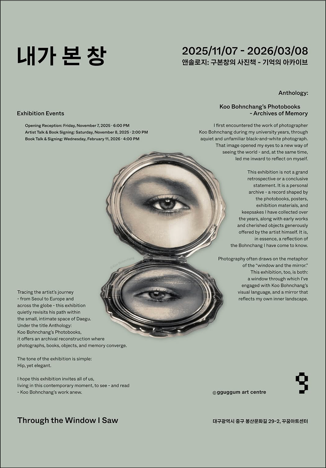

내가 본 창
앤솔로지: 구본창의 사진책
- 기억의 아카이브
2025.11.07 ~2026.02.08
Through the Window I Saw
Anthology: Koo Bohnchang's Photobooks – Archives of Memory
- 오프닝 리셉션: 2025년 11월 07일 금요일 오후 6시
- 작가와의 만남 & 북 사인회: 2025년 11월 08일 토요일 오후 2시
* 전시 연계 프로그램
- 2025년 12월 19일 (금) 오후 6시-7시
- 신라금관 촬영 에피소드 & 북 사인회
- 2026년 02월 11일 수요일 오후 4시
- 북 토크 & 사인회: 꾸꿈아트센터
대구광역시 중구 봉산문화길 29-2
